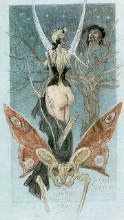
Rops: Sentimentální iniciace
|
DEKADENCE
Dekadence byla spíše životním postojem než čistě uměleckým směrem. Původní význam tohoto slova je úpadek. Zatímco oficiální kritika považovala tvorbu dekadentů za úpadkovou, tito autoři naopak neuznávali hodnoty, které jim nabízela upjatá společnost. Dekadenti si libovali v přehnaném estétství, utíkali se k umění, vyhledávali exkluzivitu a obyčejný život je příliš nezajímal. Dekadence začala být módní v poslední třetině 19. století a bývá často spojována se symbolismem. K nejoblíbenějším motivům patřily smrt, mrtvolnost, rozklad, úpadek, nemoc, nuda, erotika, fantastické vize, odvrácené stránky života nebo temné rysy lidské povahy.
Dekadentní spisovatelé navazovali na tvorbu Poea a Baudelaira. Jejich díla se vyznačují extrémním subjektivismem, pesimismem, nihilismem a morbidností. Významným dekadentem byl Francouz Huysmans, Ir Wilde nebo Polák Stanislav Przybyszewski [přibiševski]. V Čechách potom autoři z okruhu časopisu Moderní revue, zvláště Arnošt Procházka, Jiří Karásek ze Lvovic a Karel Hlaváček.
Slavným dekadentním malířem byl Belgičan Félicien Rops, autor souboru leptů Satanika, nebo Češi Karel Hlaváček, František Kobliha, Jan Konůpek a Jaroslav Panuška.
|
Dekadence ve starověku
Slovem dekadence se původně označovala pozdní tvorba starověkého Říma, kdy tato slavná říše zažívala úpadek způsobený nájezdy Hunů a Germánů. Vzhledem k zlatému věku antické civilizace došlo k úpadku jazyka, literatury, umění i celé společnosti.
Naopak s počátky starověkého Říma je úzce spjato slovo secese. Jak?
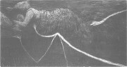
Panuška: Upíři
|
Joris-Karl Huysmans
(1848-1907)
Francouzský spisovatel George Charles [žorž šarl] se proslavil pod pseudonymem Joris-Karl Huysmans [žoris karl vismáns]. Začínal jako naturalista, ale později se vymanil ze Zolova vlivu. Jeho román Naruby je považován za bibli dekadenci. V románu Tam dole se zaměřil na okultismus a černou magii. Duchovní hledačství zavedlo Huysmanse do kláštera. Oddal se mnišskému životu a svůj přechod ke katolictví demonstroval románem Katedrála. V teoretických pojednáních se zabýval moderním uměním. Do češtiny byla přeložena jeho studie Félicien Rops.
|
Joris-Karl Huysmans: Naruby
Román Naruby je považován za zakladatelské dílo dekadentní literatury. Hlavní postavou je přecitlivělý a zženštilý šlechtic Jan des Esseintes, který utíká před realitou do světa fantazie a estétských prožitků. Žije osaměle ve svém sídle a obklopuje se drahocennými obrazy, bibliofiliemi, cizokrajnými rostlinami nebo vzácnými parfémy. Pohrdá měšťáky i lůzou a odmítá se zapojit do běžného života. Potěšení nachází v hledání známek rozkladu v různých dobách i uměleckých dílech. Nakonec upadá do letargie a nudy, nemůže ani přijímat potravu a psychicky i fyzicky se zhroutí.
|
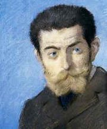
Forain: Huysmans
Zkus napodobit Esseintesovu hru s vůněmi.
Jaké představy v tobě evokují různé pachy?
Zjisti přesný význam neznámých slov.
Jaký je tvůj názor na hlavní postavu románu Naruby?
|
Oscar Wilde (1854-1900)
Irský spisovatel Oscar Wilde [oskar vajld] proslul svými aforismy a bonmoty, které uplatnil v komediích Jak je důležité mít Filipa, Ideální manžel nebo Vějíř lady Windermerové a sbírce satirických povídek Zločin lorda Arthura Savilla (Strašidlo cantervillské). Jeho přehnané estétství ovlivnilo knihy Šťastný princ a jiné pohádky a Dům granátových jablek. Vrcholem jeho tvorby je román Obraz Doriana Graye a tragédie Salome, která inspirovala Richarda Strausse ke složení stejnojmenné opery.
Přestože byl Wilde ženatý, orientoval se spíše na muže. Když ho otec jeho milence lorda Alfréda Douglase označil za sodomitu, zažaloval markýze z Queensberry pro pomluvu. Po prohraném soudním sporu byl Wilde podle tehdy platných zákonů odsouzen za homosexualitu ke dvěma letům nucených prací. Ve vězení napsal obhajobu De Profundis a Baladu o žaláři v Readingu. Zbytek života strávil v opovržení a chudobě.
Co je sodomie? Kdo byl považován za sodomitu?
Co si myslíš o homosexuálech?
Jak se proměňoval vztah společnosti k homosexualitě od starověku až do současnosti?
Kteří homosexuálové se proslavili? Jaký podíl na jejich slávě měla homosexualita?
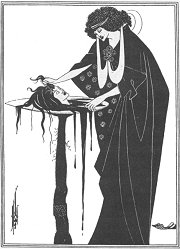
Aubrey V. Beardsley: Salome
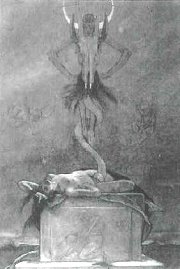
Rops: Satanika
|
Oscar Wilde: Obraz Doriana Graye
Román Obraz Doriana Graye je podobenstvím o duši člověka. Malíř Basil Hallward namaloval podobiznu krásného a nezkaženého mladíka Doriana Graye. Pod vlivem cynického lorda Henryho Wottona, se naivní Dorian postupně mění ve zloducha. Když kvůli němu spáchá herečka Sibyla Vanetová sebevraždu, vryje se tento čin do tváře na obraze. I další zločiny se zapisují pouze na plátno. Dorianův obličej je stále stejně krásný, ale jeho špatnou duši odráží kouzelný portrét... Mladík ho zamkne, aby se k němu nikdo nedostal. Své tajemství svěří pouze autorovi obrazu, ale vzápětí malíře zavraždí. Nakonec už Dorian pohled na obraz neunese, probodne ho a okamžitě umírá. Portrét se vrací do své původní podoby a z Doriana se stane ohyzdný stařec, protože tím ve skutečnosti byl.
Oscar Wilde: Šťastný princ a jiné pohádky
Wildova kniha obsahuje pět alegorických příběhů – Šťastný princ, Slavík a růže, Sobecký obr, Oddaný přítel a Jedinečná raketa. Tyto andersenovské pohádky jsou podobenstvími o smyslu krásy i ošklivosti, osudu uměleckého díla, nesobecké lásce a sebeobětování.
Oscar Wilde: Jak je důležité mít Filipa
Konverzační komedie Jak je důležité mít Filipa je založena na nevinné mystifikaci. Algernon Moncrieff si vymyslí zhýralého bratra Filipa, za kterého se vydává nejen on, ale i jeho přítel Jack (John) Worthing. Ten miluje Algernonovu sestřenici Gwendolinu Fairfaxovou. Když se její matka lady Bracknellová pídí po Filipově-Jackově původu, provalí se, že byl nalezen v úschovně zavazadel, což věstí společenský skandál. Do Filipa-Algernona se zamiluje Jackova schovanka Cecílie a obě ženy se utkají o přízeň fiktivního Filipa. V bláznivém rozuzlení vyjde najevo, že oba přátelé jsou ve skutečnosti bratři. Roztržitá chůva totiž dala do úschovny zavazadel místo rukopisu svého románu svěřené dítě, které bylo skutečně pokřtěno jménem Filip.
|
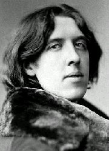
Charakterizuj postavy Doriana, malíře Hallwarda a lorda Wottona.
Chceš být věčně mladý/á? Proč?
Je důležitější krásný vzhled, nebo vnitřní krása člověka?
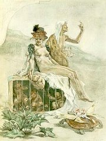
Ropsova kresba
Dokážeš převyprávět děj Wildových pohádek?
V čem se tyto příběhy liší od klasických pohádkových příběhů? Co s nimi mají společného?
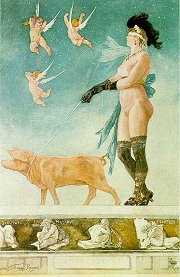
Rops: Pornokrates
Co je bonmot?
Najdi jeho příklady v textu ukázky.
Jak Wilde dosahuje komického účinku?
|
Arnošt Procházka (1869-1925)
Arnošt Procházka byl duší Moderní revue. Vydal básnickou sbírku Prostibolo duše a řadu esejů i kritik – Odilon Redon, Cesta krásy nebo Rozhovory s knihami, obrazy i lidmi. Byl také velmi pilným překladatelem, zvláště děl moderních autorů.
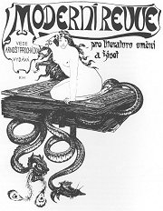
Hlaváčkova obálka Moderní revue
|
Moderní revue
Časopis Moderní revue pro literaturu, umění a život (1894-1925) vydávali čeští dekadenti Arnošt Procházka a Jiří Karásek ze Lvovic. Významným přispěvatelem byl rovněž Hlaváček, Neumann, Sova, Březina nebo Zeyer. Časopis doprovázela Knihovnička Moderní revue, ve které vycházely překlady knih moderních spisovatelů i původní díla českých autorů. Časopis i knihy měly charakter bibliofilie. Krásná grafická úprava, nádherné ilustrace, ruční papír, originální grafiky a nepříliš vysoký náklad z nich učinily exkluzivní nakladatelské počiny.
„Ne z příběhův, ale z psychických procesů jsem složil svou knihu. Dojem střídá dojem. Pocit vyměňuje pocit. Je to stálé vlnění duševních stavů.“ (Karásek o Gotické duši)
|
Jiří Karásek ze Lvovic
(1871-1951)
Spisovatel Josef Karásek psal pod pseudonymem Jiří Karásek ze Lvovic, ve skutečnosti ale šlechtický titul neměl. Pracoval jako ředitel Poštovního muzea a sbíral umělecká díla. Shromáždil neuvěřitelných 40 000 výtvarných děl a 50 000 knih. Napsal básnické sbírky Zazděná okna, Sodoma, Endymion, Kniha aristokratická nebo Sexus necans, prózy Gotická duše, Mimo život nebo Stojaté vody a drama Sen o říši krásy. Eseje shrnul do knihy Impresionisté a ironikové.
Jak se ti líbí Karáskovy básně?
Najdi v nich dekadentní motivy.
Sbírka Sodoma byla zcenzurována. Proč?
|
Karel Hlaváček (1874-1898)
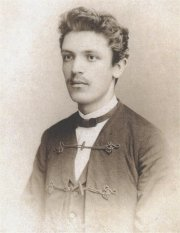
Hlaváček se narodil v pražské Libni, kde také předčasně (ve 24 letech) zemřel na tuberkulózu. Zapojil se do sokolského hnutí a vynikl také jako malíř. Vytvořil výtvarný návrh na obálku časopisu Życie, který redigoval dekadent Przybyszewski, ilustracemi doprovázel časopis Moderní revue, do něhož přispíval rovněž svými texty, a vlastní i cizí knihy. Kromě prvotiny Sokolské sonety napsal dekadentní básnické sbírky Pozdě k ránu a Mstivá kantiléna. Posmrtně vyšly nedokončené Žalmy, které mají blízko k symbolismu.
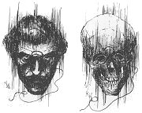
Hlaváčkův autoportrét
Vysvětli význam slova kantiléna.
Co si myslíš o Hlaváčkově poezii a jeho kresbách? Byl lepší básník, nebo malíř?
Ve kterých dílech také vystupuje Manon?
Jaký je tvůj názor na dekadenci a dekadentní umělce?
Zkus napsat dekadentní báseň nebo prózu.
|
Karel Hlaváček: Hrál kdosi na hoboj
Hrál kdosi na hoboj, a hrál již kolik dní,
hrál vždycky na večer touž píseň mollovou
a ani nerozžal si oheň pobřežní,
neb všecky ohně, prý, tu zhasnou, uplovou.
Hrál dlouze na hoboj, v tmách na pobřeží, v tmách,
na plochém pobřeží, kde nikdo nepřistál:
hrál pro svou Lhostejnost, či hrál spíš pro svůj Strach?
byl tichý Pastevec, či vyděděný Král?
Hrál smutně na hoboj. Vzduch zhluboka se chvěl
pod písní váhavou a jemnou, mollovou...
A od vod teskně zpět mu hoboj vlhkem zněl:
jsou ohně marny, jsou, vždy zhasnou, uplovou.
|
Karel Hlaváček: Pozdě k ránu
Ve sbírce Pozdě k ránu chtěl Hlaváček evokovat denní dobu, kdy noc pomalu přechází v jitro. Kromě básní (Svou violu jsem naladil co možno nejhlouběji, Podmořské pralesy se ani nezachvěly, Dva hlasy...) zařadil do této knihy také lyrické prózy (Pozdě k ránu, Subtilnost smutku...). Hlaváčkův verš je velmi hudební, jeho básně vynikají významovou neurčitostí a podmanivou atmosférou. Dekadentním pocitům vévodí melancholie.
Karel Hlaváček: Mstivá kantiléna
Ucelená sbírka Mstivá kantiléna obsahuje 12 číslovaných básní bez názvů. Hlavním motivem je vzpoura nizozemských Gézů, doplňuje ho náznak lásky k Manoně a hlavně líčení pocitů zmaru, marnosti a odcizení.
|
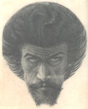
Hlaváček: Můj Kristus
Jak na tebe působí Hlaváčkova báseň Hrál kdosi na hoboj?
Proč jsou některá slova napsána s velkými písmeny?
Najdeš ve sbírce Pozdě k ránu znaky dekadence?
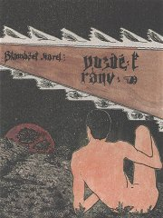
Hlaváček: Pozdě k ránu
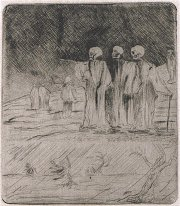
Hlaváček: Mstivá kantiléna
Co víš o Gézech?
Která báseň tě zaujala nejvíce? Proč?
|
Internetové stránky
Huysmans
Wilde: Slavík a růže, pohádka
Wilde, informace
Veselá: Oscar Wilde, článek
Hlaváček: Mstivá kantiléna
Rops, výtvarník
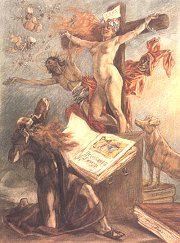
Rops: Pokušení sv. Antonína
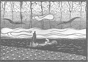
Konůpek: Podsvětí
|
Doporučená četba
Hlaváček, Karel: Hrál kdosi na hoboj, Československý spisovatel, Praha 1988
Hlaváček, K.: Budu snít marně, Mladá fronta, Praha 1998
Hlaváček, K.: Krmí svého těla, dechem své duše, Manibus propriis, Praha 1998
Huysmans, Joris-Karl: Naruby, přel. J.Pechar, Odeon, Praha 1979
Huysmans, J.-K.: Tam dole, přel. O.Levý, Srdce, Praha 1919
Karásek ze Lvovic, Jiří: A chceš-li, vyslov jméno mé..., Praha 1971
Karásek ze Lvovic, J.: Gotická duše a jiné prózy, Vyšehrad, Praha 1991
Karásek ze Lvovic, J.: Ocúny noci, Odeon, Praha 1984
Karásek ze Lvovic, J.: Vzpomínky, Thyrsus, Praha 1994
Moderní revue, 1894-1925, Praha 1995
Procházka, Arnošt: Rozhovory s knihami, obrazy i lidmi, Praha 1916
Przybyszewski, Stanislav: Paměti, korespondence, přel. J.Hloušková, Aurora, Praha 1997
Sen o říši krásy, Sbírka Jiřího Karáska ze Lvovic, Tigris, Praha 2001
Soldan, F.: Jiří Karásek ze Lvovic, Praha 1941
Soldan, F.: Karel Hlaváček, typ české dekadence, Praha 1930
Wilde, Oscar: Cantervillské strašidlo a jiné prózy, přel. J.Z.Novák, Odeon, Praha 1965
Wilde, O.: Obraz Doriana Graye, přel. J.Z.Novák, Lidové nakladatelství, Praha 1971
Wilde, O.: Pohádky, přel. J.Z.Novák, Odeon, Praha 1987
Wilde, O.: Salome, Ideální manžel, Jak je důležité mít Filipa, přel. Fleischmann, Novák, Cylindr, Hradec Králové 2000
|
Vypracuj písemný referát o některé z uvedených knih.
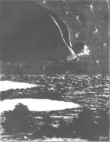
Kobliha: Upír (Pozdě k ránu)
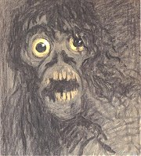
Panuška: Expresivní hlava
|
|